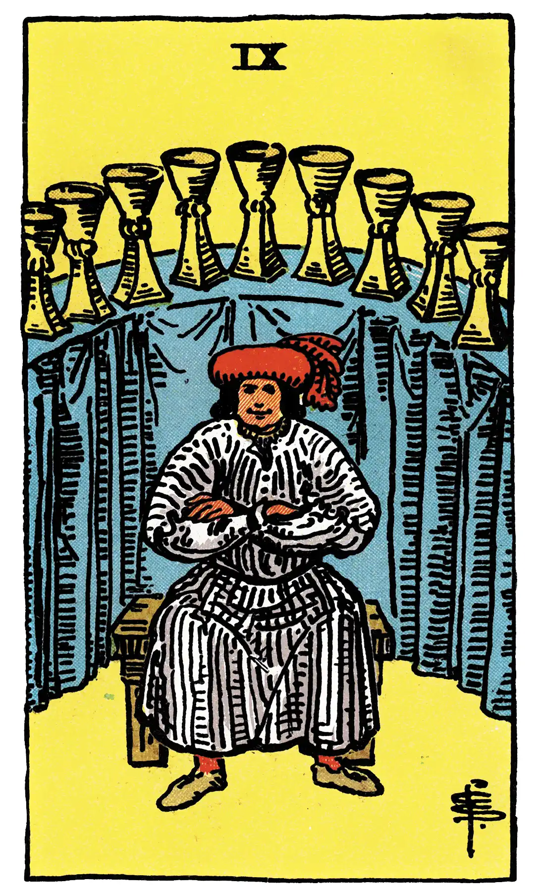

Nine of Cups

A.E.W.
Upright
Concord, contentment, physical bien-être; also victory, success, advantage; satisfaction for the Querent or person for whom the consultation is made.
Additionally
Of good augury for military men.
Recurrence
2 - Receipt.
3 - Success.
4 - A good friend.
Reversed
Truth, loyalty, liberty; but the readings vary and include mistakes, imperfections, etc.
Additionally
Good business.
Recurrence
2 - A small profit.
3 - Imprudence.
4 - Usury.
S.L.M.M.
Upright
Victory, Advantage, Success, Triumph, Difficulties surmounted
Reversed
Faults, Errors, Mistakes, Imperfections.
Description
A goodly personage has feasted to his heart's content, and abundant refreshment of wine is on the arched counter behind him, seeming to indicate that the future is also assured. The picture offers the material side only, but there are other aspects.